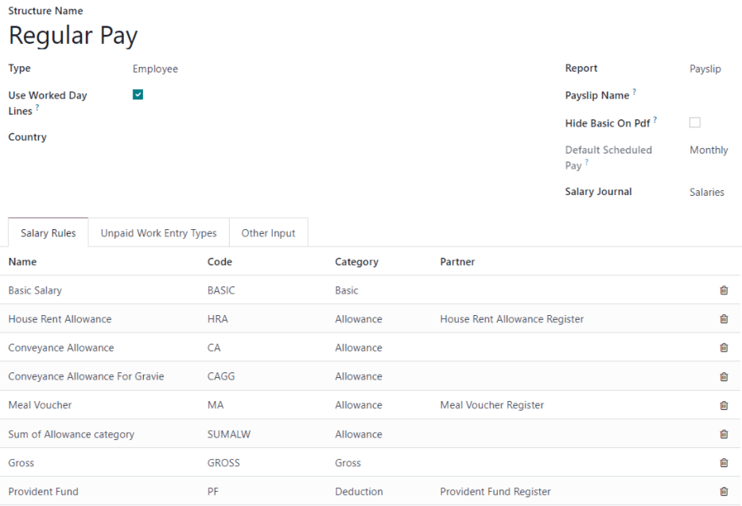
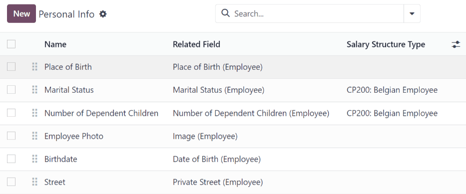

給与計算¶
Odoo Payroll is used to process work entries and create payslips for employees. Payroll works in conjunction with other Odoo apps, such as Employees, Time Off, Attendances, and Planning.
The Payroll app helps ensure there are no issues or conflicts when validating work entries. It also handles country-specific localizations to ensure payslips follow local rules and taxes, and allows for salary assignments.
管理設定¶
Configure the Payroll app by navigating to . The various settings for accounting, localizations, time off, alerts, and payslips are specified here.
会計¶
The accounting section of the configuration menu relates to three options:
Payroll Entries: enable this option to post payroll slips in accounting.
Payroll SEPA: enable this option to create SEPA payments.
Batch Account Move Lines: enable this option to have a single account move line created from all the accounting entries from the same period. This disables the generation of single payments.
Localizations¶
Localizations are country-specific settings pre-configured in Odoo at the creation of the database, which account for all taxes, fees, and allowances for that particular country.
The Localization section of the Payroll app Settings page may include specific settings that need to be set for the specific country. This selection also provides a detailed view of all benefits provided to employees.
The settings and options shown in this section varies, depending on the localization enabled for the database.
警告
It is not recommended to alter the localization settings, unless specifically required.
注釈
Odoo can handle a multi-company configuration. This is generally done when there is a main company or office location, such as a headquarters, and there are other offices/branches around the country or globe, that fall under that main company or headquarters. In Odoo, each company, including the headquarters, would be set up as their own company/branch using the multi-company method.
Each individual company can have a different localization setting, since locations can vary anywhere in the world, where rules and laws differ.
For more information on companies, refer to the Companies documentation, which covers how to set up companies.
休暇¶
Deferred Time Off: if time off is taken after payslips are validated, the time off needs to be applied to the following pay period. Select the person that will be notified for these specific time off situations using the drop-down menu in the Responsible field.
Example
An employee is paid on the 15th of the month and the last day of the month. Payslips are typically processed a day before.
If an employee's payslip is approved and processed on the 30th, but that same employee takes an unexpected sick day on the 31st, the time off needs to be logged.
Since the employee is already paid for a regular work day on the 31st, to keep the time off balances correct, the sick day is moved/applied to the 1st of the next month (the next pay period).
給与計算¶
Contract Expiration Notice Period: enter the number of Days before a contract expires, and Odoo notifies the responsible person about the upcoming expiration at that time.
Work Permit Expiration Notice Period: enter the number of Days before a work permit expires, and Odoo notifies the responsible person about the upcoming expiration at that time.
Payslip PDF Display: enable this option to show the payslip's PDF when the state is validated.
契約¶
In order for an employee to be paid, they must have an active contract for a specific type of employment. Creating and viewing contract templates, and creating and viewing employment types, is possible from this section of the configuration header menu.
テンプレート¶
Contract templates are used when sending an offer to a candidate. The contract template forms the basis of an offer, and can be modified for specific candidates or employees, when necessary. If a contract template is created or modified in the Payroll application, the changes are also reflected in the Recruitment application.
重要
To access contract templates, the Salary Configurator (hr_contract_salary) module must be
installed.
To view all the current contract templates in the database, navigate to .
On the Contract Templates page, all current contract templates appear in a list view. To view the details of a contract template, click anywhere on the line to open the contract form. The contract template can be modified from this form. Proceed to make any desired changes to the contract.
To create a new contract template, click the New button. Then, enter the following information on the blank contract template form that appears:
Contract Reference: enter a brief description for the template. This should be clear and easily understood, as this name appears in the Recruitment application, as well.
Working Schedule: select the desired working schedule the contract applies to from the drop-down menu. If a new working schedule is needed, create a new working schedule.
Work Entry Source: select how the work entries are generated. Choices are either:
Working Schedule: work entries are generated based on the selected working schedule.
Attendances: work entries are generated based on the employee's attendance, as they are logged in the Attendances application. Refer to the Attendances documentation for information on checking in and out.
Planning: work entries are generated based on the employee's planning in the Planning application.
Salary Structure Type: select the salary structure type from the drop-down menu.
Department: select the department the contract template applies to from the drop-down menu. If blank, the template applies to all departments.
Job Position: select the job position the contract template applies to from the drop-down menu. If blank, the template applies to all job positions.
Wage on Payroll: enter the monthly wage in the field.
Contract Type: select the type of contract from the drop-down menu. This list is the same as the Employment Types.
HR Responsible: select the employee responsible for validating contracts, using this template, from the drop-down menu.
New Contract Document Template: select a default document that a new employee has to sign to accept an offer.
Contract Update Document Template: select a default document that a current employee has to sign to update their contract.

Salary information tab¶
Wage Type: select either Fixed Wage or Hourly Wage from the drop-down menu.
Schedule Pay: using the drop-down menu, select how often the employee is paid. Options include Annually, Semi-annually, Quarterly, Bi-monthly, Monthly, Semi-monthly, Bi-weekly, Weekly, or Daily.
Wage: enter the gross wage. The time period presented in this field is based on what is selected for the Scheduled Pay field. It is recommended to populate the Yearly Cost (Real) field first, since that entry updates this field automatically.
Yearly Cost (Real): enter the total yearly cost the employee costs the employer. When this value is entered, the Monthly Cost (Real) is automatically updated.
Monthly Cost (Real): this field is not editable. The value is automatically populated after the Yearly Cost (Real) is entered.
重要
The Schedule Pay, Wage, and Yearly Cost (Real) fields are all linked. If any of these fields are updated, the other two fields automatically update to reflect the change. It is best practice to check these three fields if any modifications have been made, to ensure they are accurate.

Pre-tax benefits and post-tax deductions¶
Depending on the localization settings set for the company, the entries presented in this section either vary, or may not appear at all.
For example, some entries may pertain to retirement accounts, health insurance benefits, and commuter benefits.
Enter the monetary amounts or percentages to specify how much of the employee's salary goes to the various benefits and/or deductions.
Employment types¶
To view all the pre-configured employment types, navigate to .
The employment types are presented in a list view on the Employment Types page.
The default employment types are Permanent, Temporary, Seasonal, Interim, Full-Time, Part-Time, and Permanent.
To make a new employment type, click the New button in the upper-left corner, and a blank line appears at the bottom of the Employment Types page.
On this new blank line, enter the name of the employment type in the Name column. If the employment type is country-specific, select the country using the drop-down menu in the Country column. If a country is selected, then the employment type is only applicable for that specific country.
To rearrange the order of the employment types, click the six small gray boxes icon to the left of the employment type Name, and drag the line to the desired position on the list.

Work entries¶
A work entry is an individual record on an employee's timesheet. Work entries can be configured to account for all types of work and time off, such as Attendance, Sick Time Off, Training, or Public Holiday.
Work entry types¶
When creating a work entry in the Payroll application, or when an employee enters new time off types in Time Off application, a Work Entry Type needs to be selected. The list of Work Entry Types is automatically created based on localization settings set in the database.
To view the current work entry types available, go to .
Each work entry type has a code to aid in the creation of payslips, and to ensure all taxes and fees are correctly entered.

New work entry type¶
To create a new Work Entry Type, click the New button, and enter the information for the following sections on the form.
General information section¶
Work Entry Type Name: the name should be short and descriptive, such as
Sick TimeorPublic Holiday.Payroll Code: this code appears with the work entry type on timesheets and payslips. Since the code is used in conjunction with the Accounting application, it is advised to check with the accounting department for a code to use.
External Code: this code is used for exporting data to a third-party payroll service. Check with the third-party being used to determine the External Code to enter for the new work entry type.
Color: select a color for the particular work entry type.
Display in payslip section¶
Rounding: the rounding method selected determines how quantities on timesheet entries are displayed on the payslip.
No Rounding: entry is not modified.
Half Day: entry is rounded to the closest half day amount.
Day: entry is rounded to the closest full day amount.
Example
If the working time is set to an 8-hour work day (40-hour work week), and an employee enters a time of 5.5 hours on a work entry, and Rounding is set to No Rounding, the entry remains 5.5 hours. If Rounding is set to Half Day, the entry is changed to 4 hours. If it is set to Day, it is changed to 8 hours.
Unpaid section¶
Unpaid in Structures Types: if the work entry is for work that is not paid, specify which pay structure the unpaid work entry applies to from the drop-down menu. Some situations where work is logged on a payslip, but no compensation given would be for unpaid internships, unpaid training, or volunteer work.
Valid for advantages section¶
Meal Voucher: if the work entry should count towards a meal voucher, check the box.
Representation Fees: if the work entry should count towards representation fees, check the box.
Private Car Reimbursement: if the work entry should count towards a private car reimbursement, check the box.
Time off options section¶
Time Off: check this box if the work entry type can be selected for a time off request, or entry, in the Time Off application.
If Time Off is checked, a Time Off Type field appears. This field has a drop-down menu to select the specific types of time off, such as
Paid Time Off,Sick Time Off, orExtra Hours, for example.A new type of time off can be entered in the field, if the listed types of time off in the drop-down menu do not display the type of time off needed.
Reporting section¶
Unforeseen Absence: if the work entry should be visible on the unforeseen absences report, check this box.

Working schedules¶
To view the currently configured working schedules, go to . The working schedules that are available for an employee's contracts are found in this list.
Working schedules are company-specific. Each company must identify each type of working schedule they use. If the database is created for only one company, the company column is not available.
Example
An Odoo database containing multiple companies that use a standard 40-hour work week needs to have a separate working schedule entry for each company that uses the 40-hour standard work week.
A database with five companies that all use a standard 40-hour work week needs to have five separate 40-hour working schedules configured.

New working schedule¶
To create a new working schedule, click the New button, and enter the information on the form.
The fields are auto-populated for a regular 40-hour work week but can be modified. First, change the name of the working time by modifying the text in the Name field. Next, make any adjustments to the days and times that apply to the new working time.
In the Working Hours tab, modify the Day of Week, Day Period, and Work Entry Type selections by clicking on the drop-down menus in each column and making the desired selection. The Work From and Work To columns are modified by typing in the time.
注釈
The Work From and Work To times must be in a 24-hour format. For example,
2:00 PM would be entered as 14:00.
If the working time should be in a two-week configuration, click the Switch to 2 weeks calendar button in the top-left. This creates entries for an Even week and an Odd week.

給与¶
Structure types¶
In Odoo, structure types are used to identify group of people referring to the same payroll rules. A structure type contains specific options and a subset of structures that will be used according the situation.
In Odoo, an employee's payslip is based on structures and structure types, which both affect how an employee enters timesheets. Each structure type is an individual set of rules for processing a timesheet entry, which consists of different structures nested within it. Structure types define how often an employee gets paid, the working hours, and if wages are based on a salary (fixed) or how many hours the employee worked (varied).
For example, a structure type could be Employee, and that structure type could have two different
structures in it: a Regular Pay structure which includes all the separate rules for processing
regular pay, as well as a structure for an End of Year Bonus which includes the rules only for the
end of year bonus. Both the Regular Pay structure and End of Year Bonus structure are structures
within the Employee structure type.
The different Structure Types can be seen by navigating to .
Two default structure types are configured in Odoo: Employee and Worker.
Typically, Employee is used for salaried employees, which is why the wage type is Monthly Fixed Wage, and Worker is typically used for employees paid by the hour, so the wage type is Hourly Wage.

New structure type¶
To make a new structure type, click the New button, and a blank structure type form appears.
Proceed to enter information in the fields. Most fields are pre-populated, but all the fields can be modified.
Structure Type: enter the name for the new structure type, such as
EmployeeorWorker.Country: select the country that the new structure type applies to from the drop-down menu.
Wage Type: select what type of wage the new structure type uses, either Fixed Wage or Hourly Wage.
If the type is to be used for salaried employees, who receive the same wage every pay period, select Fixed Wage.
If the type is to be used for employees, who receive wages based on how many hours they worked during a pay period, select Hourly Wage.
Default Scheduled Pay: select the typical pay schedule for the new structure type from the drop-down menu. Options are Monthly, Quarterly, Semi-annually, Annually, Weekly, Bi-weekly, Bi-monthly. This indicates how often this specific type of structure is paid out.
Default Working Hours: select the default working hours for the new structure type from the drop-down menu. All available working hours for the currently selected company appear in the drop-down menu. The default working hours that are pre-configured in Odoo is the Standard 40 hours/week option. If the needed working hours do not appear in the list, a new set of default working hours can be created.
Regular Pay Structure: type in the name for the regular pay structure. It will be used as the default option when generating payslips.
Default Work Entry Type: For employees whose contracts is referred under this structure type, the main work entry type used for all period of work is defined here. It will commonly be set as Attendance, Overtime Hours, Generic Time Off, Compensatory Time Off, Home Working, Unpaid, Sick Time Off, Paid Time Off, Out Of Contract, Extra Hours, and Long Term Time Off.
To view all the options for the Default Work Entry Type, click the Search More.. button at the bottom of the drop-down list.
Depending on the localization settings, this list may contain more options in addition to the default options.
New default working hours¶
To make new default working hours, type the name for the new working hours in the Default Working Hours field on the new structure type form. Click Create and edit. A default working hours form pops up. The default working hours form has two sections, a general information section and a tab listing out all the individual working hours by day and time. When the form is completed, click Save & Close.
Name: type in the name for the new default working hours. This should be descriptive and clear to understand, such as
Standard 20 Hours/Week.Company: select the company that can use these new default working hours from the drop-down menu. Blank field means it's available for all companies.
Average Hour Per Day: the average hours per day field is auto-populated, based on the working hours configured in the Working Hours tab. This entry affects resource planning, since the average daily hours affect what resources can be used, and in what quantity, per work day.
Timezone: select the time zone to be used for the new default working hours from the drop-down menu.
Company Full Time: enter the number of hours per week an employee would need to work to be considered a full-time employee. Typically, this is approximately 40 hours, and this number affects what types of benefits an employee can receive, based on their employment status (full-time vs part-time).
Work Time Rate: this percentage is auto-generated based on the entry for the Company Full Time and the working hours configured in the Working Hours tab. This number should be between
0.00%and100%, so if the percentage is above100%, it is an indication that the working times and/or Company Full Time hours need adjustment.Working Hours Tab: this tab is where each day's specific working hours are listed. When a new default working hour form is created, the Working Hours tab is pre-populated with a default 40-hour week, with each day divided into three timed sections.
Every day has morning (8:00-12:00), lunch (12:00-13:00), and evening (13:00-17:00) hours configured, using a 24 hour time format.
To adjust any of these hours, click on the specific field to adjust, and make the adjustment using the drop-down menus, or in the specific case of the times, type in the desired time.
Keep in mind, working hours are company-specific, and cannot be shared between companies. Each company needs to have their own working hours set.
注釈
If the working hours are not consistent each week, and the hours are on a bi-weekly schedule instead, click the Switch to 2 week calendar button at the top of the new default working hours form. This changes the Working Hours tab to display two weeks of working times that can be adjusted.
給与体系¶
Salary structures are the different situations an employee could be paid within a specific structure, and are specifically defined by various rules.
The amount of structures a company needs for each structure type depends on how many different ways
employees are paid, and how their pay is calculated. For example, a common structure that could be
useful to add may be a Bonus.
To view all the various structures for each structure type, go to .
Each structure type lists the various structures associated with it. Each structure contains a set of rules that define it.

Click on a structure to view its Salary Rules. These rules define how the payslip will be computed for the employee.
規則¶
Each structure has a set of salary rules used to compute the various amounts considered in the pay. These rules are configured by the localization and affect the computation of the salaries. Modification or creation of rules should only be done when necessary.
To view all the rules, go to . Click on a structure (such as Regular Pay) to view all the rules.
To make a new rule, click New. A new rule form appears. Enter the following information in the fields.
Top section¶
Rule Name: enter a name for the rule. This field is required.
Category: select a category the rule applies to from the drop-down menu, or enter a new one. This field is required.
Code: enter a code to be used for this new rule. This field is required.
Sequence: enter a number indicating when this rule is calculated in the sequence of all other rules.
Salary Structure: select a salary structure the rule applies to from the drop-down menu, or enter a new one. This field is required.
Active: enable this toggle, so the rule is available for use. Disable the toggle to continue to show it on the payslip, but skip the computation.
Appears on payslip: tick the checkbox to have the rule appear on employee printed payslip.
View on Employer Cost Dashboard: tick the checkbox to have the rule appear on the Employer Cost report, located on the Payroll app dashboard.
View on Payroll Reporting: tick the checkbox to have the rule appear on payroll reports.

General tab¶
条件¶
Condition Based on: select from the drop-down menu whether the rule is Always True (always applies), a Range (applies to a specific range, which is entered beneath the selection), or a Python Expression (the code is entered beneath the selection). This field is required.
計算¶
Amount Type: select from the drop-down menu whether the amount is a Fixed Amount, a Percentage (%), or a Python Code. Depending on what is selected, the fixed amount, percentage, or Python code needs to be entered next. This field is required.
Company contribution¶
Partner: if another company financially contributes to this rule, select the company from the drop-down menu.
説明タブ¶
Provide any additional information in this tab to help clarify the rule. This tab only appears in the rule form.
会計タブ¶
Debit Account: select the debit account from the drop-down menu the rule affects.
Credit Account: select the credit account from the drop-down menu the rule affects.
Not computed in net accountability: If checked, the amount of the rule will be show independantly from the Net Salary, to allow a better reporting in Accounting.
Other input types¶
When creating payslips, it is sometimes necessary to add other entries for specific circumstances, like expenses, reimbursements, or deductions. These other inputs can be configured by navigating to .

To create a new input type, click the New button. Enter the Description, the Code, and which structure it applies to in the Availability in Structure field.
重要
The Code is used in the salary rules to compute payslips. If the Availability in Structure field is left blank, it indicates that the new input type is available for all payslips and is not exclusive to a specific structure.

Salary package configurator¶
The various options under the Salary Package Configurator section of the menu all affect an employee's potential salary.
Depending on what information an employee enters (such as deductions, dependents, etc.), their salary is adjusted accordingly. When an applicant applies for a job on the company website, the sections under Salary Package Configurator directly affect what the applicant sees, and what is populated, as the applicant enters information.
福利厚生¶
When offering potential employees a position, there can be certain benefits set in Odoo, in addition to the salary, to make an offer more appealing (such as extra time off, the use of a company car, reimbursement for a phone or internet, etc.).
To view the benefits, go to . Benefits are grouped by Structure type, and the benefit listed for a particular structure type is only available for that specific structure.

Example
A company has two structure types, one labeled Employee, and another labeled Intern. The Employee structure type contains the benefit of using a company car, while the Intern structure type has a meal voucher benefit available.
A person hired under the Employee structure type can use the company car benefit, but cannot have meal vouchers. A person hired under the Intern structure type would have meal voucher benefits available to them, not the use of a company car.
To make a new benefit, click the New button, and enter the information in the fields on the blank benefits form.
The various fields for creating a benefit are as follows:
General information section¶
Contract Related Field: select from the drop-down menu a field from the contract. The choosen value from the employee will be recorded to that field.
Benefits: enter the name for the benefit. This field is required.
Benefit Type: select from the drop-down menu what type of benefit it is. Select from Monthly Benefit in Kind, Monthly Benefit in Net, Monthly Benefit in Cash, Yearly Benefits in Cash, or Non Financial Benefits. This field is required.
Cost Field: select from the drop-down menu a field from the contract. The field will define the cost of the benefit and by extention the impact on the salary, Wage, Wage with Holidays, and Work time rate. Depending on the localization settings, additional options are available.
Related Type: select from the drop-down menu what type of benefit it is. Select from Monthly Benefit in Kind, Monthly Benefit in Net, Monthly Benefit in Cash, Yearly Benefits in Cash, or Non Financial Benefits. This field is required.
Impacts Net Salary: tick the checkbox if the benefit should impact the employee's net salary.
Requested Documents: select any document that is required to be submitted for this benefit, from the drop-down menu.
Mandatory Benefits: using the drop-down menu, select the benefit that is required in order for this specific benefit to be offered to the employee.
For example, a benefit for car insurance would populate
Company Carin this field. This would allow the car insurance benefit to only be displayed if the employee has selected/enabled the benefit of a company car.Salary Structure Type: select from the drop-down menu which salary structure type this benefit applies to. This field is required.
Unit of Measure: select the metric that the benefit is granted, using the drop-down menu. The options are Days, Percent, or Currency.

Display section¶
Show Name: tick the checkbox to have the benefit name appear in the salary package configurator.
Display Type: select from the drop-down menu how this benefit is displayed. The options are Always Selected, Dropdown, Dropdown Group, Slider, Radio Buttons, Manual Input, or Text. This field is required.
Depending on the selection made, additional configurations need to be made. For example, if Radio Buttons is selected, the individual radio buttons must be entered.
Icon: an icon from the Font Awesome 4 library can be visible for this benefit. Enter the text code for the icon in this field. For example, to display a suitcase icon, the code
fa fa-suitcaseis entered on this line.Hide Description: tick the checkbox to hide the benefit description if the benefit is not selected by the employee.
Folded: if the benefit should be folded, or hidden, because it is dependant on another benefit selection, tick the checkbox. The following fields appear when this is active:
Fold Label: enter a name for the folded section of the benefit.
Fold Res Field: select the contract field this benefit is tied to using the drop-down menu. If this field is selected on the contract, then this benefit becomes visible.
活動セクション¶
Activity Type: from the drop-down menu, select the activity type that is automatically created when this benefit is selected by the employee.
Activity Creation: select when the activity is created, either when the Employee signs his contract, or when the Contract is countersigned. Click the radio button next to the desired selection.
Activity Creation Type: select the parameters for when the activity is created, either When the benefit is set or When the benefit is modified. Click the radio button next to the desired selection.
Assigned to: select the user the activity is automatically assigned to, using the drop-down menu.
Sign section¶
Template to Sign: if the employee is required to sign a document when selecting this benefit, select the document template from the drop-down menu.
For example, a benefit regarding the use of a company car may require the employee to sign a document acknowledging the company's car policies.
説明タブ¶
Provide any additional information in this tab to help clarify the benefit.
Personal info¶
Every employee in Odoo has an employee card which is created when a candidate becomes an employee. This card includes all of their personal information, resume, work information, and documents.
The personal information is gathered from the salary package configurator section that a candidate fills out after being offered a position. This personal information is then transferred to the employee card when they are hired.
To view an employee's card, go to the main app dashboard, and click on the employee's card.
注釈
An employee card can be thought of as an employee personal file.
The Personal Info section lists all of the fields that are available to enter on the employee's card. To access this section, go to .
To edit a personal info entry, select an entry from the list on the Personal Info page, and modify the personal info on the form that appears.
To create a new personal info entry, click the New button.
The required fields, aside from entering the Information name, are Related Model, Related Field, and Category.
Select a Related Model from the drop-down menu. Employee populates the field by default, but the Bank Account option is also available if the information is related to a bank account, instead.
Select a Related Field from the drop-down menu that best describes what kind of personal information this entry is, and where it is stored in the backend. Then, select a Category from the drop-down menu that the personal information should be under, such as Address or Personal Documents.
The two most important fields on the personal info form are Is Required and Display Type.
Checking the Is Required box makes the field mandatory on the employee's card. The Display Type drop-down menu allows for the information to be entered in a variety of ways, like a Text box, to a customizable Radio button, a Checkbox, a Document, and more.

履歴¶
The resumé section, housed within the salary package configurator section of the settings menu, is how salary information rules are configured when offering a position to potential employees.
When an offer is sent to a prospective employee, the values for the offer are computed from these settings, and appear on the offer page.
To configure this section, navigate to .
By default, there are three Salary Structure Types pre-configured in Odoo: Worker, Employee, and None.
Each Salary Structure Type has several rules configured. These affect how an offer is calculated using that particular Salary Structure Type.
To create a new rule, click the New button, and a blank Contract Salary Resumé form loads.
フォームに以下の情報を入力して下さい:
Information: type in a name for this field.
Category: select the category this value is housed under, using the drop-down menu. The default options are Monthly Salary, Monthly Benefits, Yearly Benefits, and Total.
New categories can be made if needed.
Click the New button, then enter the name for the new category in the Name field. Next, select the Periodicity from the drop-down menu, either Monthly or Yearly. Last, enter a number for the sequence. This corresponds to where this rule appears in the Salary Structure Type rule list.
Finally, click Save & Close.
Impacts Monthly Total: tick the checkbox if this value is added in the monthly total calculation.
Unit of Measure: select what kind of value this rule is, either Currency, Days, or Percent.
Currency is for a set monetary value, Days is for compensation in the form of time off, and Percent is for a monetary value awarded that is based upon another metric, such as commissions.
Salary Structure Type: select which Salary Structure Type this rule is nested under, from the drop-down menu.
Value Type: select how the value is computed, using the drop-down menu. The default options are Fixed Value, Contract Value, Payslip Value, Sum of Benefits Values, and Monthly Total.
Code: select the code this rule applies to from the drop-down menu.

採用情報¶
Since the Payroll application is responsible for paying employees for specific job positions, the complete list of job positions can be found in both the Payroll and Recruitment applications.
Job positions¶
The job positions listed in the Payroll application are identical to the job positions listed in the Recruitment application. If a new job position is added in the Recruitment application, it is also visible in the Payroll application, and vice versa.
To view the job positions, navigate to .
A list of all the job positions appear, along with the corresponding department, on the Job Position page.

To create a new job description, click the New button and a job form appears.
Enter the information on the form for the new position. The information is identical as to the information entered when creating a new job position in the Recruitment application.
Refer to the Job positions documentation for more details on how to fill out this form.
関連項目